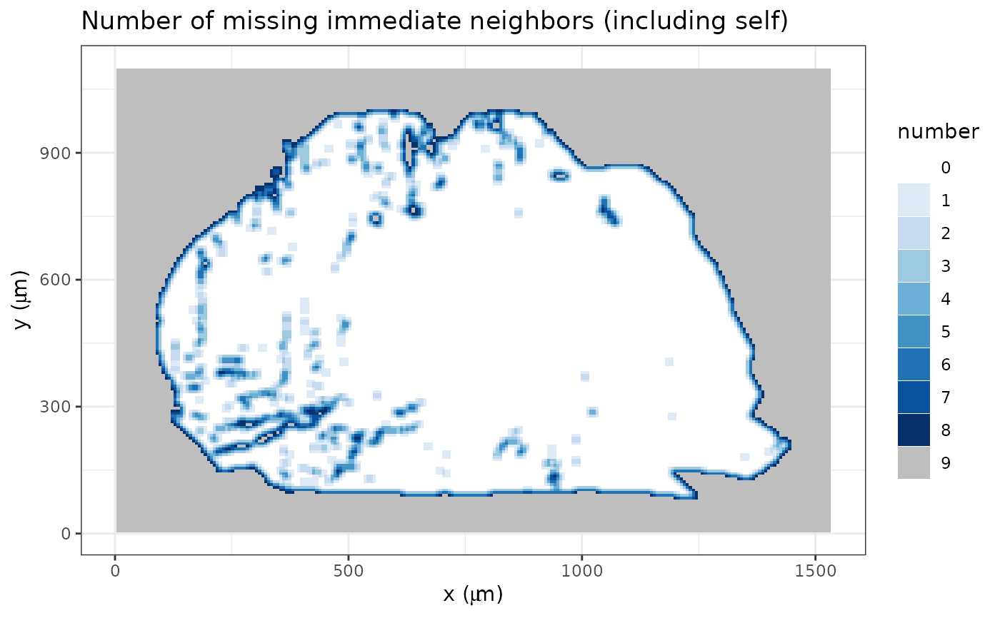
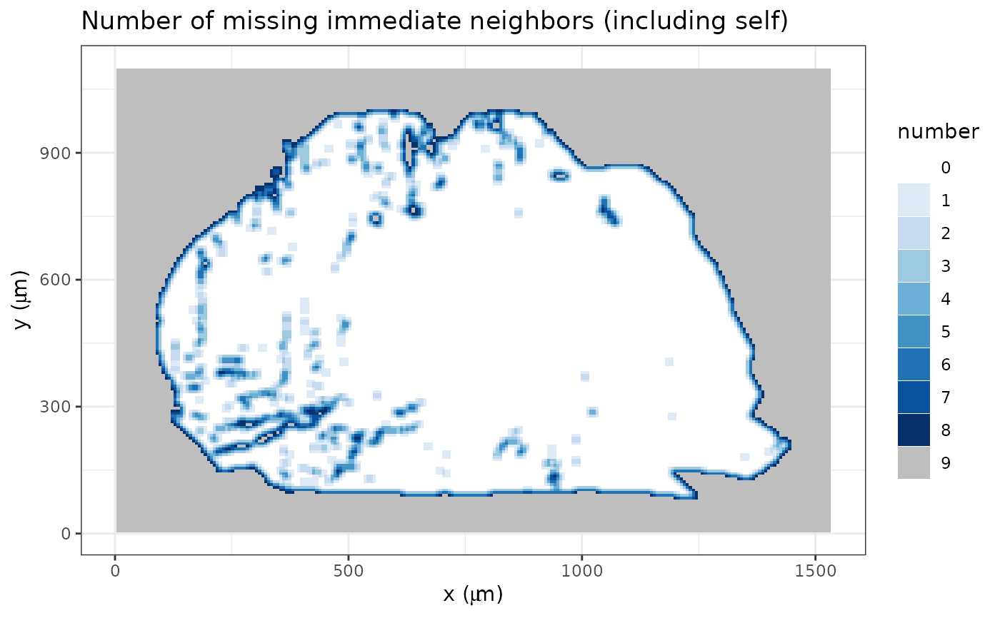
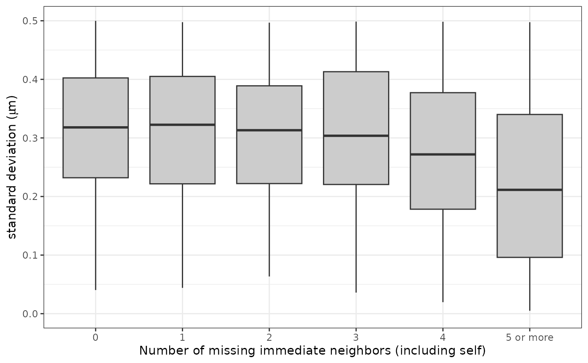
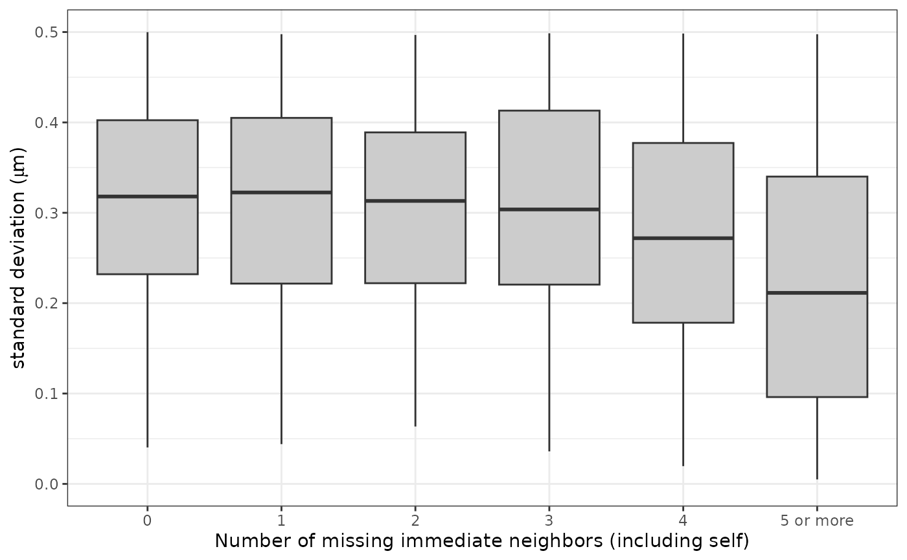

Create the summary data frame for the inner polygon of an x3p object.
Arguments
- x3p
x3pobject- mask_col
colour for the polygon
- concavity
strictly positive value used in
concaveman::concaveman- b
positive integer value, block size, used in
x3ptools::x3p_average- ifplot
whether graphs are displayed
Value
data frame of inside polygon
x:
xvalue from inputx3pobjecty:
yvalue from inputx3pobjectvalue: height value from input
x3pobjectmask: mask value from input
x3pobjectn_neighbor_val_miss: number of missing immediate neighbor, self included
sd_not_miss: standard deviation for immediate neighbor
Examples
x3p <- x3p_subsamples[[1]]
x3p_insidepoly_df(x3p, mask_col = "#FF0000", concavity = 1.5, b = 10, ifplot = TRUE) %>%
str()
 

 #> Warning: Removed 142 rows containing non-finite values (`stat_boxplot()`).

#> 'data.frame': 456 obs. of 6 variables:
#> $ x : num 0 64.5 129 193.5 258 ...
#> $ y : num 1161 1161 1161 1161 1161 ...
#> $ value : num NaN NaN NaN NaN NaN NaN NaN NaN NaN NaN ...
#> $ mask : chr "#FFFFFF" "#FFFFFF" "#FFFFFF" "#FFFFFF" ...
#> $ n_neighbor_val_miss: Factor w/ 11 levels "0","1","2","3",..: 11 11 11 11 11 11 11 11 11 11 ...
#> $ sd_not_miss : num NaN NaN NaN NaN NaN NaN NaN NaN NaN NaN ...
#> - attr(*, "header.info")=List of 4
#> ..$ sizeX : int 24
#> ..$ sizeY : int 19
#> ..$ incrementX: num 64.5
#> ..$ incrementY: num 64.5
#> Warning: Removed 142 rows containing non-finite values (`stat_boxplot()`).

#> 'data.frame': 456 obs. of 6 variables:
#> $ x : num 0 64.5 129 193.5 258 ...
#> $ y : num 1161 1161 1161 1161 1161 ...
#> $ value : num NaN NaN NaN NaN NaN NaN NaN NaN NaN NaN ...
#> $ mask : chr "#FFFFFF" "#FFFFFF" "#FFFFFF" "#FFFFFF" ...
#> $ n_neighbor_val_miss: Factor w/ 11 levels "0","1","2","3",..: 11 11 11 11 11 11 11 11 11 11 ...
#> $ sd_not_miss : num NaN NaN NaN NaN NaN NaN NaN NaN NaN NaN ...
#> - attr(*, "header.info")=List of 4
#> ..$ sizeX : int 24
#> ..$ sizeY : int 19
#> ..$ incrementX: num 64.5
#> ..$ incrementY: num 64.5